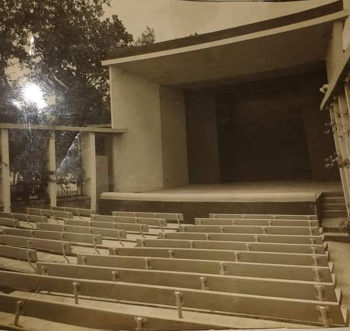
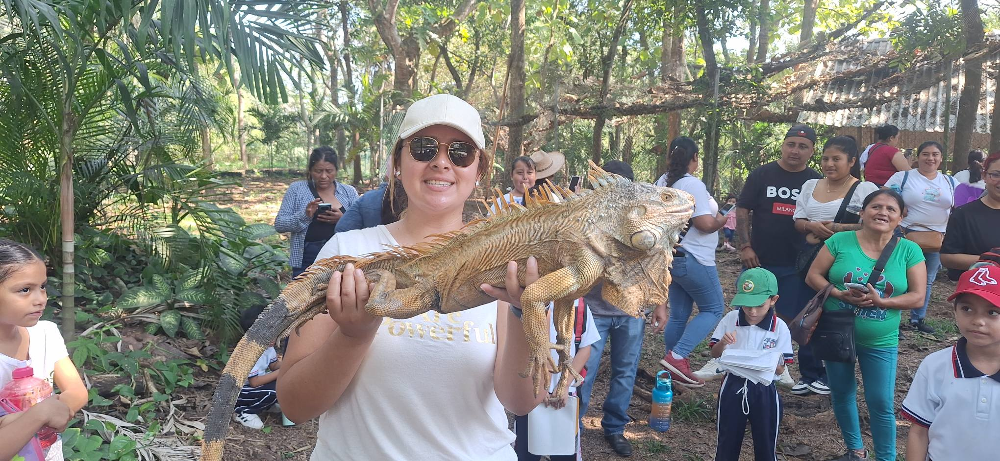

Esta pagina tiene como finalidad dar a conocer un poco de la historia de CD.ALEMAN.
Actualmente resulta dificil encontrar un poco de la historia de CD.ALEMAN. La informacion de esta pagina fue encontrada en diversas fuentes de informacion
al igual que las imagenes antiguas
Foto aerea CD.ALEMAN en 1952
La Cuenca del Papaloapan y el municipio de Cosamaloapan en particular fueron sede de grandes proyectos y transformaciones después de la gran inundación de 1944 que ubicó a la región en el contexto nacional, uno de los más importantes fue la conformación de la Comisión del Papaloapan y la construcción de su sede en un nuevo centro de población creado exprofeso para ello, denominado Ciudad "General Miguel Alemán" en honor al padre del entonces Presidente de la República Lic. Miguel Alemán Valdez, ambos oriundos de Sayula, Ver.
"Ciudad Alemán fue fundada en 1947 por la Comisión del Papaloapan sobre un punto cubierto por selva virgen en los terrenos del municipio de Cosamaloapan. El proyecto contempló apertura de calles, bulevares, escuelas, clínicas, un casino, restaurante y teatro, así como oficinas para el desarrollo administrativo de la Comisión".
Por décadas esta comunidad perteneciente a Cosamaloapan, pero muy cerca de donde se establecerían los límites con Tres Valles, fue sede de grandes e importantes oficinas gubernamentales que dirigieron proyectos de la región hidrológica del río Papaloapan y sus afluentes, incluyendo pueblos de tres estados del país (Veracruz, Oaxaca y Puebla).

Multifamiliar de CD.ALEMAN (aqui se hospedaban los trabajadores con su familia)
Ciudad Alemán o más propiamente "Ciudad General Miguel Alemán" es una de las nueve congregaciones que conforman el municipio de Cosamaloapan y una de las más importantes en su momento, en el ámbito político y administrativo pues fue sede de un organismo descentralizado del gobierno federal denominado "Comisión del Papaloapan" (CODELPA) que rigió los rumbos, obras y proyectos de la vasta cuenca hidrográfica del Papaloapan, abarcando en su administración y jurisdicción más de 240 municipios pertenecientes a los estados de Veracruz, Oaxaca y Puebla.
El complejo urbano de Ciudad Alemán se fundó en 1947 (un año después de instituida la CODELPA), en ella se asentaron las sedes de diversas oficinas gubernamentales, viviendas de ingenieros y complejos habitacionales de los trabajadores, en medio de áreas ajardinadas, escuelas, áreas de uso común que incluían parques, un teatro, comedores, viveros, restaurantes e incluso una aeropista, una población que vivió un auge y decadencia en poco menos de 40 años, en los que fue un hito a nivel regional.
Tomado de Wikipedia en el apartado sobre la Comisión del Papaloapan, se describe lo siguiente sobre su sede, jurisdicción e historia:
"Con sede en Ciudad Alemán, Cosamaloapan, Veracruz, la cobertura de la Comisión incluía alrededor de 46,000 km² de los estados de Oaxaca, Veracruz y Puebla, siendo sus límites no los administrativos, sino los hidrológicos propios de la cuenca, y el trabajo de este organismo constituyó una verdadera obra de investigación, planeación y desarrollo en su jurisdicción, por lo que jugó un papel clave en el aspecto actual de la región. La Comisión del Papaloapan fue finalmente liquidada mediante la abrogación de su decreto de creación, el 4 de noviembre de 1986."

Escuela Primaria General "Ignacio Zaragoza" de Ciudad Alemán
segun la informacion encontrada estas instalaciones tenian la funcionalidad de primaria y secundaria. La primaria contaba con el horario matutino y la secundaria el horario vespertino

Teatro cultural de CD.ALEMAN (Tenia funcionalidad de teatro cultural y algunas veces se utilizaba para mostrar peliculas)

Foto actual de las lucertas de CD.ALEMAN
La UMA (Unidad de Manejo para la Conservación de la vida silvestre) Lucertas S.C. de R.L. de C.V., inicia sus actividades de conservación en el año 1994 con la necesidad de aprovechar una tierra que no era productiva para las actividades agropecuarias, ni ganaderas de los ejidos de Novara y Gabino Barreda, pertenecientes a los municipio de Tres Valles y Cosamaloapan, Ver.

Foto actual de CURET
Esta era una fundacion civil que estaba al servicio y apoyo de las comunidades. Era de gran ayuda para los ciudadanos con pocos recursos de CD.ALEMAN y la comunidades cercanas. Esta fundacion ayudo a mejorar la calidad de vida de muchas familias gracias a sus diversos apoyos